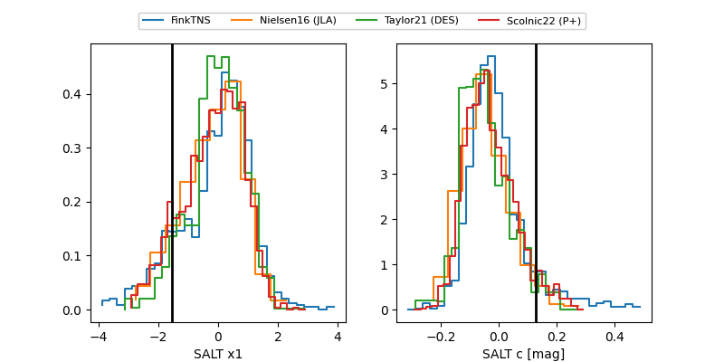

FINK: ZTF25abopybc
Lasair: ZTF25abopybc
ALeRCE: ZTF25abopybc
TNS: 2025wwk
YSE: 2025wwk
ZTF25abopybc (ztf,fink)
2025wwk (tns,yse)
PS25hlr (panstarrs)
equatorial (ra, dec) = (5.3423,+22.43363)
galactic (l, b) = (113.8619,-39.90798)

last atlasc=16.14, atlaso=16.23, ztfg=16.59, ztfr=16.29
3 atlasc, 8 atlaso, 11 ztfg, 8 ztfr detections